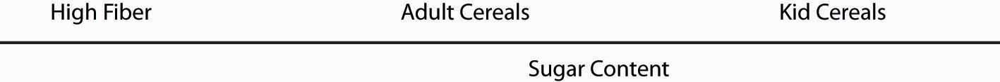
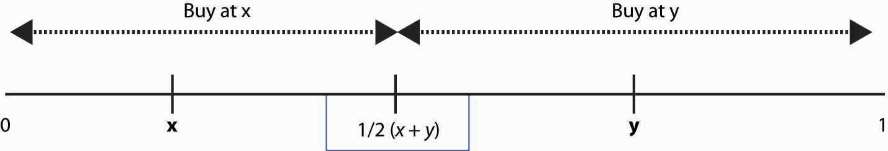

When there are only a handful of firms—as in most industries from which final consumers purchase—the assumptions of perfect competition are unreasonable. But with two or more firms, monopoly isn’t a good model either. Imperfect competition refers to the case of firms that individually have some price-setting ability or “market power” but are constrained by rivals. Our analysis starts with one model of imperfect competition formulated over 170 years ago.
The CournotAugustus Cournot (1801–1877). oligopoly model is the most popular model of imperfect competition. It is a model in which the number of firms matters, and it represents one way of thinking about what happens when the world is neither perfectly competitive nor a monopoly.
In the Cournot modelA model of imperfect competition where firms simultaneously set quantities., there are n firms, who simultaneously set quantities. We denote a typical firm as firm i and number the firms from i = 1 to i = n. Firm i chooses a quantity qi ≥ 0 to sell, and this quantity costs ci(qi). The sum of the quantities produced is denoted by Q. The price that emerges from the competition among the firms is p(Q), and this is the same price for each firm. It is probably best to think of the quantity as really representing a capacity, and competition in prices by the firms determining a market price given the market capacity.
The profit that a firm i obtains is
Each firm chooses qi to maximize profit. The first-order conditionsBear in mind that Q is the sum of the firms’ quantities, so that when firm i increases its output slightly, Q goes up by the same amount. give
This equation holds with equality provided qi > 0. A simple thing that can be done with the first-order conditions is to rewrite them to obtain the average value of the price-cost margin:
Here is firm i’s market share. Multiplying this equation by the market share and summing over all firms i = 1, …, n yields where is the Hirschman-Herfindahl Index (HHI)The weighted average of the price-cost margins of all firms in the market..The HHI is named for Albert Hirschman (1915– ), who invented it in 1945, and Orris Herfindahl (1918–1972), who invented it independently in 1950. The HHI has the property that if the firms are identical, so that si = 1/n for all i, then the HHI is also 1/n. For this reason, antitrust economists will sometimes use 1/HHI as a proxy for the number of firms, and describe an industry with “2 ½ firms,” meaning an HHI of 0.4.To make matters more confusing, antitrust economists tend to state the HHI using shares in percent, so that the HHI is on a 0 to 10,000 scale.
We can draw several inferences from these equations. First, larger firms, those with larger market shares, have a larger deviation from competitive behavior (price equal to marginal cost). Small firms are approximately competitive (price nearly equals marginal cost), while large firms reduce output to keep the price higher, and the amount of the reduction, in price-cost terms, is proportional to market share. Second, the HHI reflects the deviation from perfect competition on average; that is, it gives the average proportion by which price equal to marginal cost is violated. Third, the equation generalizes the “inverse elasticity result” proved for monopoly, which showed that the price-cost margin was the inverse of the elasticity of demand. The generalization states that the weighted average of the price-cost margins is the HHI over the elasticity of demand.
Because the price-cost margin reflects the deviation from competition, the HHI provides a measure of how large a deviation from competition is present in an industry. A large HHI means the industry “looks like monopoly.” In contrast, a small HHI looks like perfect competition, holding constant the elasticity of demand.
The case of a symmetric (identical cost functions) industry is especially enlightening. In this case, the equation for the first-order condition can be rewritten as or
Thus, in the symmetric model, competition leads to pricing as if demand was more elastic, and indeed is a substitute for elasticity as a determinant of price.
How does the Cournot industry perform? Let us return to the more general model, which doesn’t require identical cost functions. We already have one answer to this question: the average price-cost margin is the HHI divided by the elasticity of demand. Thus, if we have an estimate of the demand elasticity, we know how much the price deviates from the perfect competition benchmark.
The general Cournot industry actually has two sources of inefficiency. First, price is above marginal cost, so there is the deadweight loss associated with unexploited gains from trade. Second, there is the inefficiency associated with different marginal costs. This is inefficient because a rearrangement of production, keeping total output the same, from the firm with high marginal cost to the firm with low marginal cost, would reduce the cost of production. That is, not only is too little output produced, but what output is produced is inefficiently produced, unless the firms are identical.
To assess the productive inefficiency, we let be the lowest marginal cost. The average deviation from the lowest marginal cost, then, is
Thus, while a large HHI means a large deviation from price equal to marginal cost and hence a large level of monopoly power (holding constant the elasticity of demand), a large HHI also tends to indicate greater productive efficiency—that is, less output produced by high-cost producers. Intuitively, a monopoly produces efficiently, even if it has a greater reduction in total output than other industry structures.
There are a number of caveats worth mentioning in the assessment of industry performance. First, the analysis has held constant the elasticity of demand, which could easily fail to be correct in an application. Second, fixed costs have not been considered. An industry with large economies of scale, relative to demand, must have very few firms to perform efficiently, and small numbers should not necessarily indicate the market performs poorly even if price-cost margins are high. Third, it could be that entry determines the number of firms and that the firms have no long-run market power, just short-run market power. Thus, entry and fixed costs could lead the firms to have approximately zero profits, in spite of price above marginal cost.
Using Exercise 1, suppose there is a fixed cost F that must be paid before a firm can enter a market. The number of firms n should be such that firms are able to cover their fixed costs, but add one more cost and they can’t. This gives us a condition determining the number of firms n:
Thus, each firm’s net profits are
Note that the monopoly profits πm are ¼ (1-c)2. Thus, with free entry, net profits are less than and industry net profits are less than
Table 17.1 "Industry Profits as a Fraction of Monopoly Profits" shows the performance of the constant-cost, linear-demand Cournot industry when fixed costs are taken into account and when they aren’t. With two firms, gross industry profits are 8/9 of the monopoly profits, not substantially different from monopoly. But when fixed costs sufficient to ensure that only two firms enter are considered, the industry profits are at most 39% of the monopoly profits. This percentage—39%—is large because fixed costs could be “relatively” low, so that the third firm is just deterred from entering. That still leaves the two firms with significant profits, even though the third firm can’t profitably enter. As the number of firms increases, gross industry profits fall slowly toward zero. The net industry profits, on the other hand, fall dramatically and rapidly to zero. With 10 firms, the gross profits are still about a third of the monopoly level, but the net profits are only at most 5% of the monopoly level.
Table 17.1 Industry Profits as a Fraction of Monopoly Profits
| Number of Firms | Gross Industry Profits (%) | Net Industry Profits (%) |
|---|---|---|
| 2 | 88.9 | 39.0 |
| 3 | 75.0 | 27.0 |
| 4 | 64.0 | 19.6 |
| 5 | 55.6 | 14.7 |
| 10 | 33.1 | 5.3 |
| 15 | 23.4 | 2.7 |
| 20 | 18.1 | 1.6 |
The Cournot model gives a useful model of imperfect competition, a model that readily permits assessing the deviation from perfect competition. The Cournot model embodies two kinds of inefficiency: (a) the exercise of monopoly power and (b) technical inefficiency in production. In settings involving entry and fixed costs, care must be taken in applying the Cournot model.
Suppose the inverse demand curve is p(Q) = 1 – Q, and that there are n Cournot firms, each with constant marginal cost c, selling in the market.
Suppose the inverse demand curve is p(Q) = 1 – Q, and that there are n Cournot firms, each with marginal cost c selling in the market.
Consider n identical Cournot firms in equilibrium.
The market for Satellite Radio consists of only two firms. Suppose the market demand is given by P = 250 – Q, where P is the price and Q is the total quantity, so Q = Q1 + Q2. Each firm has total costs given by C(Qi) = Qi2 + 5 Qi + 200.
Breakfast cereals range from indigestible, unprocessed whole grains to boxes that are filled almost entirely with sugar, with only the odd molecule or two of grain thrown in. Such cereals are hardly good substitutes for each other. Yet similar cereals are viewed by consumers as good substitutes, and the standard model of this kind of situation is the Hotelling model.Hotelling theory is named for Harold Hotelling (1895–1973). Hotelling was the first to use a line segment to represent both the product that is sold and the preferences of the consumers who are buying the products. In the Hotelling modelModel of imperfect competition in which customers’ preferences and products are located by points on the same line segment., customers' preferences are located by points on the same line segment. The same line is used to represent products. For example, movie customers are differentiated by age, and we can represent moviegoers by their ages. Movies, too, are designed to be enjoyed by particular ages. Thus, a preteen movie is unlikely to appeal very much to a 6-year-old or to a 19-year-old, while a Disney movie appeals to a 6-year-old, but less to a 15-year-old. That is, movies have a target age, and customers have ages, and these are graphed on the same line.
Figure 17.1 Hotelling Model for Breakfast Cereals
Breakfast cereal is a classic application of the Hotelling line, and this application is illustrated in Figure 17.1 "Hotelling Model for Breakfast Cereals". Breakfast cereals are primarily distinguished by their sugar content, which ranges on the Hotelling line from low on the left to high on the right. Similarly, the preferences of consumers also fall on the same line. Each consumer has a “most desired point,” and he or she prefers cereals closer to that point than cereals at more distant points.
There are two main types of differentiation, each of which can be modeled using the Hotelling line. These types are quality and variety. Quality refers to a situation where consumers agree on which product is better; the disagreement among consumers concerns whether higher quality is worth the cost. In automobiles, faster acceleration, better braking, higher gas mileage, more cargo space, more legroom, and greater durability are all good things. In computers, faster processing, brighter screens, higher resolution screens, lower heat, greater durability, more megabytes of RAM, and more gigabytes of hard drive space are all good things. In contrast, varieties are the elements about which there is not widespread agreement. Colors and shapes are usually varietal rather than quality differentiators. Some people like almond-colored appliances, others choose white, with blue a distant third. Food flavors are varieties, and while the quality of ingredients is a quality differentiator, the type of food is usually a varietal differentiator. Differences in music would primarily be varietal.
Quality is often called vertical differentiationQuality., while variety is horizontal differentiationVariety..
The standard Hotelling model fits two ice cream vendors on a beach. The vendors sell an identical product, and they can choose to locate wherever they wish. For the time being, suppose the price they charge for ice cream is fixed at $1. Potential customers are also spread randomly along the beach.
We let the beach span an interval from 0 to 1. People desiring ice cream will walk to the closest vendor because the price is the same. Thus, if one vendor locates at x and the other at y, and x < y, those located between 0 and ½ (x + y) go to the left vendor, while the rest go to the right vendor. This is illustrated in Figure 17.2 "Sharing the Hotelling Market".
Figure 17.2 Sharing the Hotelling Market
Note that the vendor at x sells more by moving toward y, and vice versa. Such logic forces profit-maximizing vendors to both locate in the middle. The one on the left sells to everyone left of ½, while the one on the right sells to the rest. Neither can capture more of the market, so equilibrium locations have been found. (To complete the description of an equilibrium, we need to let the two “share” a point and still have one on the right side and one on the left side of that point.)
This solution is commonly used as an explanation of why U.S. political parties often seem very similar to each other—they have met in the middle in the process of chasing the most voters. Political parties can’t directly buy votes, so the “price” is fixed; the only thing parties can do is locate their platform close to voters’ preferred platform, on a scale of “left” to “right.” But the same logic that a party can grab the middle, without losing the ends, by moving closer to the other party will tend to force the parties to share the same middle-of-the-road platform.
The model with constant prices is unrealistic for the study of the behavior of firms. Moreover, the two-firm model on the beach is complicated to solve and has the undesirable property that it matters significantly whether the number of firms is odd or even. As a result, we will consider a Hotelling model on a circle and let the firms choose their prices.
In the circle modelA Hotelling model set on a circle., a Hotelling model is set on a circle. There are n firms evenly spaced around the circle whose circumference is 1. Thus, the distance between any firm and each of its closest neighbors is 1/n. Consumers care about two things: how distant the firm they buy from is and how much they pay for the good. Consumers minimize the sum of the price paid and t times the distance between the consumer’s location (also on the circle) and the firm. Each consumer’s preference is uniformly distributed around the circle. The locations of firms are illustrated in Figure 17.3 "A Segment of the Circle Model".
Figure 17.3 A Segment of the Circle Model

We conjecture a Nash equilibrium in which all firms charge the price p. To identify p, we look for what p must be to make any one firm choose to charge p, given that the others all charge p. So suppose the firm in the middle of Figure 17.3 "A Segment of the Circle Model" charges an alternate price r, but every other firm charges p. A consumer who is x units away from the firm pays the price r + tx from buying at the firm, or p + t(1/n – x) from buying from the rival. The consumer feels indifferent toward the nearby firms if these are equal, that is, r + tx* = p + t(1/n – x*) where x* is the location of the consumer who is indifferent.
Thus, consumers who are closer than x* to the firm charging r buy from that firm, and consumers who are further away than x* buy from the alternative firm. Demand for the firm charging r is twice x* (because the firm sells to both sides), so profits are price minus marginal cost times two x*; that is,
The first-order conditionBecause profit is quadratic in r, we will find a global maximum. for profit maximization is
We could solve the first-order condition for r. But remember that the question is, when does p represent a Nash equilibrium price? The price p is an equilibrium price if the firm wants to choose r = p. Thus, we can conclude that p is a Nash equilibrium price when
This value of p ensures that a firm facing rivals who charge p also chooses to charge p. Thus, in the Hotelling model, price exceeds marginal cost by an amount equal to the value of the average distance between the firms because the average distance is 1/n and the value to a consumer for traveling that distance is t. The profit level of each firm is so industry profits are
How many firms will enter the market? Suppose the fixed cost is F. We are going to take a slightly unusual approach and assume that the number of firms can adjust in a continuous fashion, in which case the number of firms is determined by the zero profit condition or
What is the socially efficient number of firms? The socially efficient number of firms minimizes the total costs, which are the sum of the transportation costs and the fixed costs. With n firms, the average distance a consumer travels is
Thus, the socially efficient number of firms minimizes the transport costs plus the entry costs This occurs at The socially efficient number of firms is half the number of firms that enter with free entry.
Too many firms enter in the Hotelling circle model. This extra entry arises because efficient entry is determined by the cost of entry and the average distance of consumers, while prices are determined by the marginal distance of consumers, or the distance of the marginal consumer. That is, competing firms’ prices are determined by the most distant customer, and that leads to prices that are too high relative to the efficient level; free entry then drives net profits to zero only when it is excess entry.
The Hotelling model is sometimes used to justify an assertion that firms will advertise too much, or engage in too much research and development (R&D), as a means of differentiating themselves and creating profits.